Chapitre 1 Visualisation avec ggplot2
Il est souvent nécessaire d’utiliser des techniques de visualisation au cours des différentes étapes d’un projet en science des données. Un des avantages de R est qu’il est relativement simple de mettre en œuvre tout les types de graphes généralement utilisés. Dans cette fiche, nous présentons tout d’abord les fonctions classiques qui permettent de tracer des figures. Nous proposons ensuite une introduction aux graphes ggplot qui sont de plus en plus utilisés pour faire de la visualisation.
1.1 Fonctions graphiques conventionnelles
Pour commencer il est intéressant d’examiner quelques exemples de représentations graphiques construits avec R. On peut les obtenir à l’aide de la fonction demo.
1.1.1 La fonction plot
C’est une fonction générique que l’on peut utiliser pour représenter différents types de données. L’utilisation standard consiste à visualiser une variable y en fonction d’une variable x. On peut par exemple obtenir le graphe de la fonction \(x\mapsto \sin(2\pi x)\) sur \([0,1]\), à l’aide de


Nous proposons des exemples de représentations de variables quantitatives et qualitatives à l’aide du jeu de données ozone.txt que l’on importe avec
> ozone <- read.table("data/ozone.txt")
> summary(ozone)
## maxO3 T9 T12 T15
## Min. : 42.00 Min. :11.30 Min. :14.00 Min. :14.90
## 1st Qu.: 70.75 1st Qu.:16.20 1st Qu.:18.60 1st Qu.:19.27
## Median : 81.50 Median :17.80 Median :20.55 Median :22.05
## Mean : 90.30 Mean :18.36 Mean :21.53 Mean :22.63
## 3rd Qu.:106.00 3rd Qu.:19.93 3rd Qu.:23.55 3rd Qu.:25.40
## Max. :166.00 Max. :27.00 Max. :33.50 Max. :35.50
## Ne9 Ne12 Ne15 Vx9
## Min. :0.000 Min. :0.000 Min. :0.00 Min. :-7.8785
## 1st Qu.:3.000 1st Qu.:4.000 1st Qu.:3.00 1st Qu.:-3.2765
## Median :6.000 Median :5.000 Median :5.00 Median :-0.8660
## Mean :4.929 Mean :5.018 Mean :4.83 Mean :-1.2143
## 3rd Qu.:7.000 3rd Qu.:7.000 3rd Qu.:7.00 3rd Qu.: 0.6946
## Max. :8.000 Max. :8.000 Max. :8.00 Max. : 5.1962
## Vx12 Vx15 maxO3v vent
## Min. :-7.878 Min. :-9.000 Min. : 42.00 Length:112
## 1st Qu.:-3.565 1st Qu.:-3.939 1st Qu.: 71.00 Class :character
## Median :-1.879 Median :-1.550 Median : 82.50 Mode :character
## Mean :-1.611 Mean :-1.691 Mean : 90.57
## 3rd Qu.: 0.000 3rd Qu.: 0.000 3rd Qu.:106.00
## Max. : 6.578 Max. : 5.000 Max. :166.00
## pluie
## Length:112
## Class :character
## Mode :character
##
##
## On visualise tout d’abord 2 variables quantitatives à l’aide d’un nuage de points : la concentration en ozone maximale maxO3 en fonction de la température à 12h T12.

Comme les deux variables appartiennent au même jeu de données, on peut obtenir la même représentation à l’aide d’une sytaxe plus claire qui ajoutent automatiquement les noms des variables sur les axes :

Une autre façon de faire (moins naturelle) :

Il existe des fonctions spécifiques pour chaque type de graphs, par exemple histogram, barplot et boxplot :


1.1.2 Graphes interactifs avec rAmCharts
On peut utiliser ce package pour obtenir des graphes dynamiques. L’utilisation est relativement simple, il suffit d’ajouter le prefixe am devant le nom de la fonction :
- Tracer la fonction sinus entre \(0\) et \(2\pi\).
- A l’aide de la fonction title ajouter le titre Représentation de la fonction sinus.
> x <- seq(0,2*pi,length=1000)
> plot(x,sin(x),type="l")
> title("Représentation de la fonction sinus")
- Tracer la densité de la loi normale centrée réduite entre \(-4\) et 4 (utiliser dnorm).
- Ajouter une ligne verticale (en tirets) qui passe par \(x=0\) (utiliser abline avec lty=2).
- Sur le même graphe, ajouter les densités de loi la de Student à 5 et 30 degrés de liberté (utiliser dt). On utilisera la fonction lines et des couleurs différentes pour chaque densité.
- Ajouter une légende qui permet de repérer chaque densité (fonction legend).
> x <- seq(-4,4,by=0.01)
> plot(x,dnorm(x),type="l")
> abline(v=0,lty=2)
> lines(x,dt(x,5),col=2)
> lines(x,dt(x,30),col=3)
> legend("topleft",legend=c("normal","Student(5)","Student(30)"),
+ col=1:3,lty=1)
- Importer la série taches_solaires.csv qui donne, date par date, un nombre de taches solaires observées.
- A l’aide de la fonction cut_interval du tidyverse créer un facteur qui sépare l’intervalle d’années d’observation en 8 intervalles de tailles à peu près égales. On appellera periode ce facteur.
- Utiliser les levels suivants pour le facteur periode.
- Expliquer la sortie de la fonction
- On crée une séquence avec un pas de 1 de longueur égale à la dimension de
taches[,1]. Visualiser la série du nombre de taches en utilisant une couleur différente pour chaque période.

- un graphe sur la première ligne (nuage de points maxO3 vs T12)
- 2 graphes sur la deuxième colonne (histogramme de T12 et boxplot de maxO3).
> layout(matrix(c(1,1,2,3), 2, 2, byrow = TRUE))
> plot(maxO3~T12,data=ozone)
> hist(ozone$T12)
> boxplot(ozone$maxO3)
1.2 La grammaire ggplot2
Ce package propose de définir des graphes sur R en utilisant une grammaire des graphiques (tout comme dplyr pour manipuler les données). On peut trouver de la documentation sur ce package aux url http://ggplot2.org et https://ggplot2-book.org.
1.2.1 Premiers graphes ggplot2
Nous considérons un sous échantillon du jeu de données diamonds du package ggplot2 (qui se trouve dans le tidyverse).
> library(tidyverse)
> set.seed(1234)
> diamonds2 <- diamonds[sample(nrow(diamonds),5000),]
> summary(diamonds2)
## carat cut color clarity depth
## Min. :0.2000 Fair : 158 D: 640 SI1 :1189 Min. :43.00
## 1st Qu.:0.4000 Good : 455 E: 916 VS2 :1157 1st Qu.:61.10
## Median :0.7000 Very Good:1094 F: 900 SI2 : 876 Median :61.80
## Mean :0.7969 Premium :1280 G:1018 VS1 : 738 Mean :61.76
## 3rd Qu.:1.0400 Ideal :2013 H: 775 VVS2 : 470 3rd Qu.:62.50
## Max. :4.1300 I: 481 VVS1 : 326 Max. :71.60
## J: 270 (Other): 244
## table price x y
## Min. :49.00 Min. : 365 Min. : 0.000 Min. :3.720
## 1st Qu.:56.00 1st Qu.: 945 1st Qu.: 4.720 1st Qu.:4.720
## Median :57.00 Median : 2376 Median : 5.690 Median :5.700
## Mean :57.43 Mean : 3917 Mean : 5.728 Mean :5.731
## 3rd Qu.:59.00 3rd Qu.: 5294 3rd Qu.: 6.530 3rd Qu.:6.520
## Max. :95.00 Max. :18757 Max. :10.000 Max. :9.850
##
## z
## Min. :0.000
## 1st Qu.:2.920
## Median :3.520
## Mean :3.538
## 3rd Qu.:4.030
## Max. :6.430
##
> help(diamonds)Pour un jeu de données considéré, un graphe ggplot est défini à partir de couches que l’on assemblera avec l’opérateur +. Il faut a minima spécifier :
- les données
- les variables que l’on souhaite représenter
- le type de représentation (nuage de points, boxplot…).
Il existe un verbe pour définir chacune de ces couches :
- ggplot pour les données
- aes (aesthetics) pour les variables
- geom_ pour le type de représentation.
On peut obtenir le nuage de points carat vs price avec la fonction plot :

Avec ggplot, on va faire

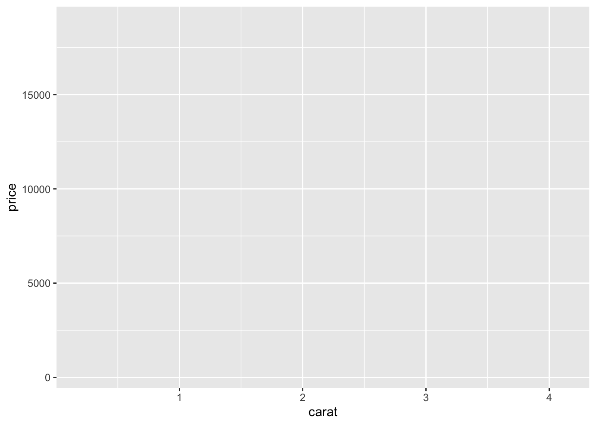
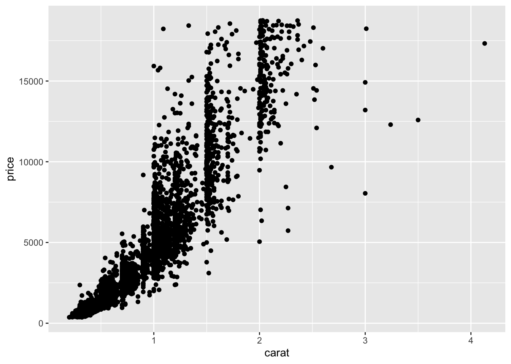
- Tracer l’histogramme de la variable carat (utiliser
geom_histogram). - Tracer l’histogramme de la variable carat avec 10 classes (help(geom_histogram)).
- Tracer le diagramme à batons de la variable cut (utiliser geom_bar).


La syntaxe ggplot se construit à partir d’éléments indépendants qui définissent la grammaire de ggplot. Les principaux verbes sont :
- Data (
ggplot) : les données au format dataframe ou tibble - Aesthetics (
aes) : pour sépecifier les variables à représenter dans le graphe. - Geometrics (
geom_...) : le type de graphe (nuage de points, histogramme…). - Statistics (
stat_...) : utile pour spécifier des transformations des données nécessaires pour obtenir le graphe. - Scales (
scale_...) : pour controler les paramètres permettant d’affiner le graphe (changement de couleurs, paramètres des axes…).
Tous ces éléments sont reliés avec le symbole +.
1.2.2 Data et aesthetics
Ces deux verbes sont à utiliser pour tous les graphes ggplot. Le verbe ggplot servira à définir le jeu de données que l’on souhaite utiliser. Si le code est bien fait, nous n’aurons plus à utiliser le nom du jeu de données par la suite pour construire le graphe. Le verbe aes est quant à lui utile pour sépcifier le nom des variables que l’on souhaite visualiser. Par exemple, pour le nuage de points price vs carat la syntaxe devra débuter par
Les variables peuvent également être utilisées pour colorier des points ou des barres, définir des tailles… Dans ce cas on pourra renseigner les arguments color, size, fill dans la fonction aes. Par exemple
1.2.3 Geometrics
Ce verbe décrira le type de représentation souhaitée. Pour un nuage de points, on utilisera par exemple geom_point :
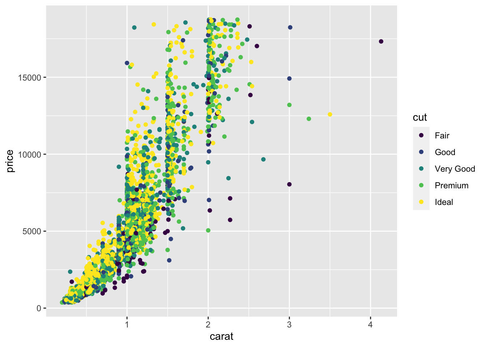
On observe que ggplot ajoute la légende automatiquement. Voici les principaux exemples de geometrics :
| Geom | Description | Aesthetics |
|---|---|---|
| geom_point() | nuage de points | x, y, shape, fill |
| geom_line() | Ligne (ordonnée selon x) | x, y, linetype |
| geom_abline() | Ligne | slope, intercept |
| geom_path() | Ligne (ordonnée par l’index) | x, y, linetype |
| geom_text() | Texte | x, y, label, hjust, vjust |
| geom_rect() | Rectangle | xmin, xmax, ymin, ymax, fill, linetype |
| geom_polygon() | Polygone | x, y, fill, linetype |
| geom_segment() | Segment | x, y, xend, yend, fill, linetype |
| geom_bar() | Diaggramme en barres | x, fill, linetype, weight |
| geom_histogram() | Histogramme | x, fill, linetype, weight |
| geom_boxplot() | Boxplot | x, fill, weight |
| geom_density() | Densité | x, y, fill, linetype |
| geom_contour() | Lignes de contour | x, y, fill, linetype |
| geom_smooth() | Lisseur (linéaire ou non linéaire) | x, y, fill, linetype |
| Tous | color, size, group |
- Tracer le diagramme en barres de la variable cut avec des barres bleues.
- Tracer le diagramme en barres de la variable cut avec une couleur pour chaque modalité de cut ainsi qu’une légende qui permet de repérer la couleur.
- Tracer le diagramme en barres de la variable cut avec une couleur pour chaque modalité que vous choisirez (et sans légende).


1.2.4 Statistics
Certains graphes nécessitent des calculs d’indicateurs statistiques pour être tracé. C’est par exemple le cas pour le diagamme en barres et l’histogramme où il faut calculer des hauteurs des barres. Les transformations simples peuvent se faire rapidement, on peut par exemple tracer la fonction sinus avec

La transformation est spécifiée dans la fonction aes. Pour des transformations plus complexes, nous devons utiliser des statistics. Une fonction stat permet de définir des nouvelles variables à partir du jeu de données initial, il est ensuite possible de représenter ces nouvelles variables.
Par exemple, la fonction stat_bin, qui est utilisée par défaut pour construire des histogrammes, produit les variables suivantes :
count, le nombre d’observations dans chaque classes.density, la valeur de la densité des observations dans chaque classe (fréquance divisée par largeur de la classe).x, le centre de la classe.
Par défaut geom_histogram fait appel à cette fonction stat_binet représente sur l’axe \(y\) le nombre d’observations dans chaque classe (la variable count).

Si on souhaite une autre variable issue de stat_bin, comme par exemple la densité, il faudra utiliser

Il est possible d’utiliser les fonctions stat_ à la place des geom_ pour certaines représentations. Chaque fonction stat_ possède par défaut un geom_ et réciproquement. On peut par exemple obtenir le même graphe que précédemment avec
Voici quelques exemple de fonctions stat_
| Stat | Description | Paramètres |
|---|---|---|
| stat_identity() | aucune transformation | |
| stat_bin() | Count | binwidth, origin |
| stat_density() | Density | adjust, kernel |
| stat_smooth() | Smoother | method, se |
| stat_boxplot() | Boxplot | coef |
stat et geom ne sont pas toujours simples à combiner. Nous recommandons d’utiliser geom lorsqu’on débute avec ggplot, les statisticspar défaut ne doivent en effet être changés que rarement.
On considère une variable qualitative \(X\) dont la loi est donnée par \[P(X=red)=0.3,\ P(X=blue)=0.2,\ P(X=green)=0.4,\ P(X=black)=0.1\] Représenter cette distribution de probabilité avec un diagramme en barres.
> X <- data.frame(X1=c("red","blue","green","black"),prob=c(0.3,0.2,0.4,0.1))
> ggplot(X)+aes(x=X1,y=prob,fill=X1)+geom_bar(stat="identity")+
+ labs(fill="Couleur")+xlab("")
- Représenter le lissage non linéaire de la variable
pricecontre la variablecaratà l’aide degeom_smoothpuis destat_smooth. - Même question mais avec une ligne en pointillés à la place d’un trait plein.
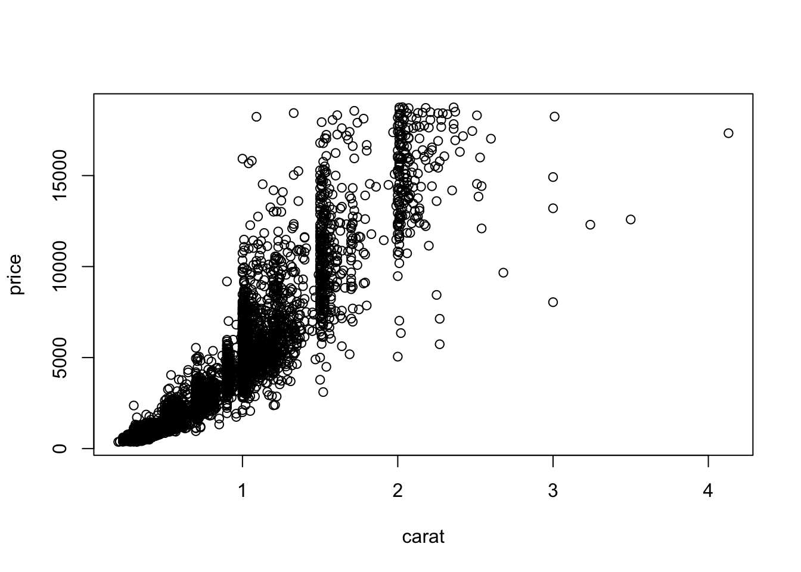


1.2.5 Scales
Les échelles (scales) controlent tout un tas d’options telles que des changements de couleurs, d’échelles ou de limites d’axes, de symboles, etc… L’utilisation n’est pas simple et nécessite de la pratique. On utilise généralement ce verbe à la dernière étape de construction du graphe. La syntaxe est définie comme suit :
- début :
scale_. - ajout de l’aesthetics que l’on souhaite modifier (
color,fill,x_). - fin : nom de l’échelle (
manual,identity…)
Par exemple,
> ggplot(diamonds2)+aes(x=carat,y=price,color=cut)+geom_point()+
+ scale_color_manual(values=c("Fair"="black","Good"="yellow",
+ "Very Good"="blue","Premium"="red","Ideal"="green"))
Voici quelques exemples des principales échelles :
| aes | Discret | Continu |
|---|---|---|
| Couleur (color et fill) | brewer | gradient |
| - | grey | gradient2 |
| - | hue | gradientn |
| - | identity | |
| - | manual | |
| Position (x et y) | discrete | continous |
| - | date | |
| Forme | shape | |
| - | identity | |
| - | manual | |
| Taille | identity | size |
| - | manual |
Nous présentons quelques exemples d’utilisation des échelles :
Couleur dans un diagramme en barres

On change la couleur en utilisant la palette Purples :

Gradient de couleurs pour un nuage de points:

On change le gradient de couleur

Modification sur les axes
> p2+scale_x_continuous(breaks=seq(0.5,3,by=0.5))+
+ scale_y_continuous(name="prix")+
+ scale_color_gradient("Profondeur")
1.2.6 Group et facets
ggplot permet de faire des représentations pour des groupes d’individus. On procède généralement de deux façons différentes :
- visualisation de sous groupes sur le même graphe, on utilise l’option group dans aes ;
- visualisation de sous groupes sur des graphes différents, on utilise le verbe facets.
Représentons ici (sur le même graphe) le lisseur price vs carat pour chaque modalité de cut

Pour obtenir cette représentation sur plusieurs fenêtres, on utilise

facet_grid et facet_wrap font des choses proches mais divisent la fenêtre de façon différente :
> ggplot(diamonds2)+aes(x=carat,y=price)+geom_point()+
+ geom_smooth(method="lm")+facet_grid(color~cut)
> ggplot(diamonds2)+aes(x=carat,y=price)+geom_point()+
+ geom_smooth(method="lm")+facet_wrap(color~cut)
1.3 Compléments
La syntaxe ggplot est définie selon le schéma :
Elle est très flexible, on peut par exemple spécifier les variables de aes dans les verbes ggplot ou geom_ :


Ceci peut se révéler très utile lorsqu’on utilise des aes différents dans les geom_.
On peut aussi construire un graphe à l’aide de différents jeux de données :
> X <- seq(-2*pi,2*pi,by=0.001)
> Y1 <- cos(X)
> Y2 <- sin(X)
> donnees1 <- data.frame(X,Y1)
> donnees2 <- data.frame(X,Y2)
> ggplot(donnees1)+geom_line(aes(x=X,y=Y1))+
+ geom_line(data=donnees2,aes(x=X,y=Y2),color="red")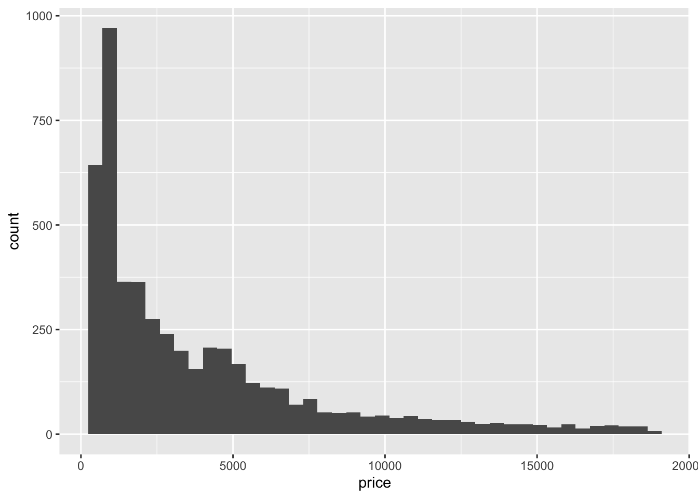
Il existe d’autres fonctions ggplot :
- ggtitle pour ajouter un titre.
- ggsave pour sauver un graphe.
- theme_ pour changer le theme du graphe.


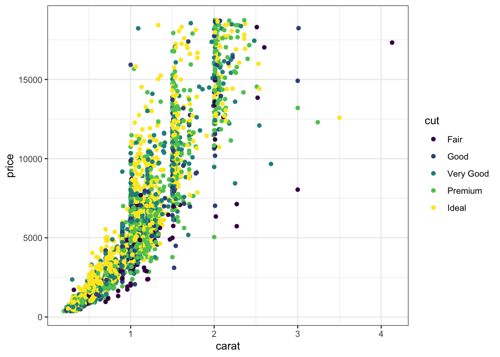
D’autres thèmes sont disponibles dans le package ggtheme. On pourra également parler de la fonction set_theme qui permet de préciser modifier le thème par défaut pour un document Markdown.
1.4 Quelques exercices supplémentaires
- Tracer les fonctions sinus et cosinus. On utilisera tout d’abord deux jeux de données : un pour le sinus, l’autre pour le cosinus.
> X <- seq(-2*pi,2*pi,by=0.001)
> Y1 <- cos(X)
> Y2 <- sin(X)
> donnees1 <- data.frame(X,Y1)
> donnees2 <- data.frame(X,Y2)
> ggplot(donnees1)+geom_line(aes(x=X,y=Y1))+
+ geom_line(data=donnees2,aes(x=X,y=Y2),color="red")
- Faire la même chose avec un jeu de données et deux appels à la fonction
geom_line. On pourra ajouter une légende.
> donnees <- data.frame(X,Y1,Y2)
> ggplot(donnees)+aes(x=X,y=Y1)+geom_line()+
+ geom_line(aes(y=Y2),color="red")
> #ou pour la légende
> ggplot(donnees)+aes(x=X,y=Y1)+geom_line(aes(color="cos"))+
+ geom_line(aes(y=Y2,color="sin"))+labs(color="Fonction")
- Faire la même chose avec un jeu de données et un seul appel à
geom_line. On pourra utiliser la fonction gather du tidyverse.
> df <- data.frame(X,cos=Y1,sin=Y2)
> df1 <- df %>% pivot_longer(cols=c(cos,sin),
+ names_to = "Fonction",
+ values_to = "value")
> #ou
> df1 <- df %>% pivot_longer(cols=-X,
+ names_to = "Fonction",
+ values_to = "value")
> ggplot(df1)+aes(x=X,y=value,color=Fonction)+geom_line()
- Tracer les deux fonctions sur deux fenêtres graphiques (utiliser
facet_wrap).

- Faire la même chose avec la fonction
grid.arrangedu package gridExtra.
> library(gridExtra)
> p1 <- ggplot(donnees1)+aes(x=X,y=Y1)+geom_line()
> p2 <- ggplot(donnees2)+aes(x=X,y=Y2)+geom_line()
> grid.arrange(p1,p2,nrow=1)
On considère les données mtcars
> data(mtcars)
> summary(mtcars)
## mpg cyl disp hp
## Min. :10.40 Min. :4.000 Min. : 71.1 Min. : 52.0
## 1st Qu.:15.43 1st Qu.:4.000 1st Qu.:120.8 1st Qu.: 96.5
## Median :19.20 Median :6.000 Median :196.3 Median :123.0
## Mean :20.09 Mean :6.188 Mean :230.7 Mean :146.7
## 3rd Qu.:22.80 3rd Qu.:8.000 3rd Qu.:326.0 3rd Qu.:180.0
## Max. :33.90 Max. :8.000 Max. :472.0 Max. :335.0
## drat wt qsec vs
## Min. :2.760 Min. :1.513 Min. :14.50 Min. :0.0000
## 1st Qu.:3.080 1st Qu.:2.581 1st Qu.:16.89 1st Qu.:0.0000
## Median :3.695 Median :3.325 Median :17.71 Median :0.0000
## Mean :3.597 Mean :3.217 Mean :17.85 Mean :0.4375
## 3rd Qu.:3.920 3rd Qu.:3.610 3rd Qu.:18.90 3rd Qu.:1.0000
## Max. :4.930 Max. :5.424 Max. :22.90 Max. :1.0000
## am gear carb
## Min. :0.0000 Min. :3.000 Min. :1.000
## 1st Qu.:0.0000 1st Qu.:3.000 1st Qu.:2.000
## Median :0.0000 Median :4.000 Median :2.000
## Mean :0.4062 Mean :3.688 Mean :2.812
## 3rd Qu.:1.0000 3rd Qu.:4.000 3rd Qu.:4.000
## Max. :1.0000 Max. :5.000 Max. :8.000- Tracer l’histograme de mpg (on fera varier le nombre de classes).
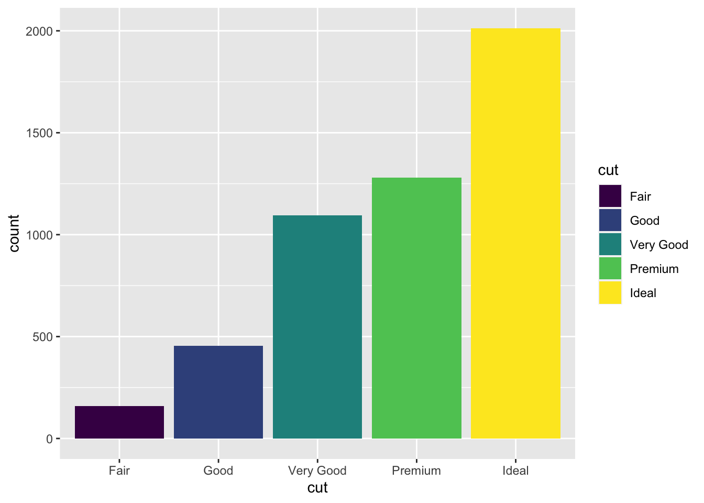

2.Tracer l’histogramme de la densité.
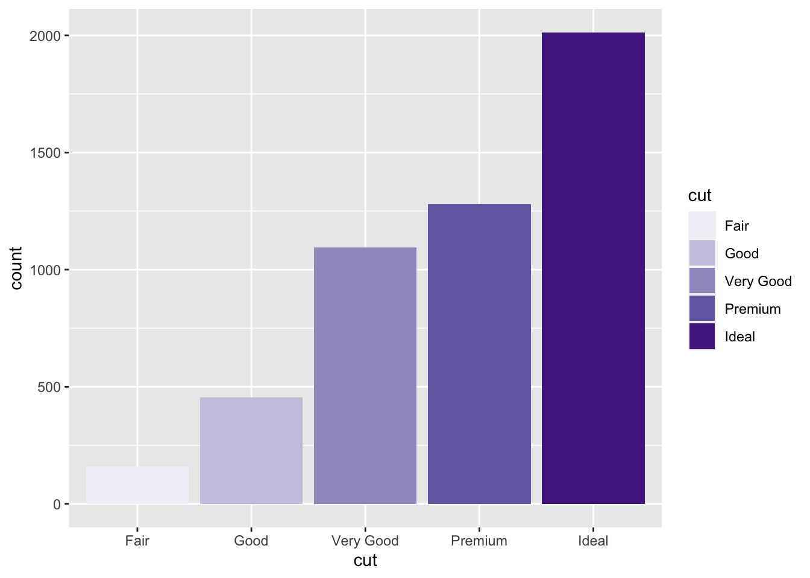
- Tracer le diagramme en barres de cyl.
- Tracer le nuage de points disp vs mpg en utilisant une couleur différente pour chaque valeur de cyl.
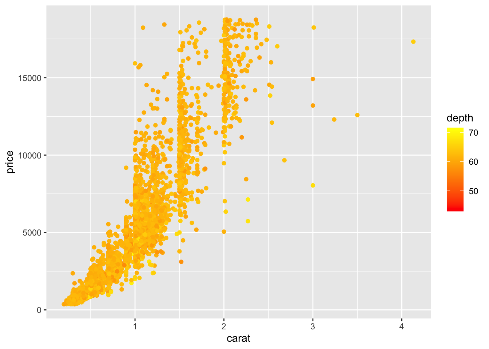

- Ajouter le lisseur linéaire sur le graphe.
> ggplot(mtcars)+aes(x=disp,y=mpg,color=as.factor(cyl))+geom_point()+
+ geom_smooth(method="lm")+labs(color="cyl")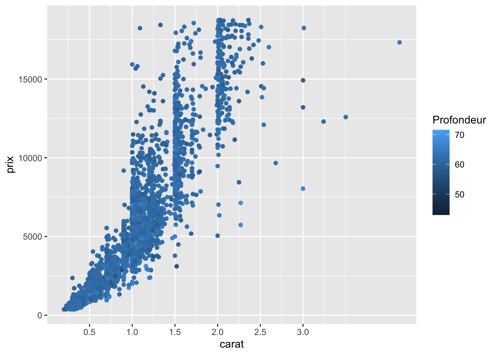
- Générer un échantillon \((x_i,y_i),i=1,\dots,100\) selon le modèle linéaire \[Y_i=3+X_i+\varepsilon_i\] où \(X_i\) sont i.i.d. de loi uniforme sur \([0,1]\) et \(\varepsilon_i\) sont i.i.d. de loi gaussienne \(N(0,0.2^2)\) (utiliser runif et rnorm).
- Tracer le nuage de points Y vs X et ajouter le lisseur linéaire.
On le fait d’abord “à la main” en calculant l’équation de la droite de régression.
> model <- lm(Y~.,data=D)
> co <- coef(model)
> D$fit <- predict(model)
> co <- coef(lm(Y~.,data=D))
> ggplot(D)+aes(x=X,y=Y)+geom_point()+
+ geom_abline(slope=co[2],intercept=co[1],color="blue")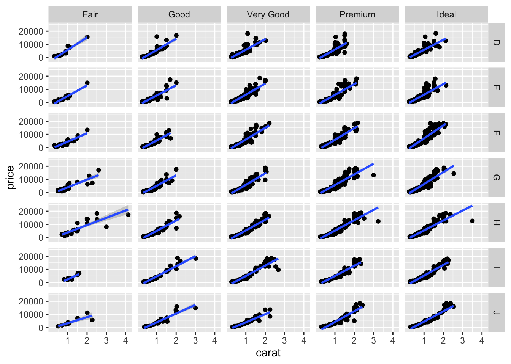
On peut avoir le tracé directement avec geom_smooth.

- Représenter les résidus : on ajoutera une ligne verticale entre chaque point et la droite de lissage (utiliser geom_segment).
> ggplot(D)+aes(x=X,y=Y)+geom_point()+geom_smooth(method="lm")+
+ geom_segment(aes(xend=X,yend=fit))
On considère les données diamonds.
- Tracer les graphes suivants (utiliser
coord_flippour le second).
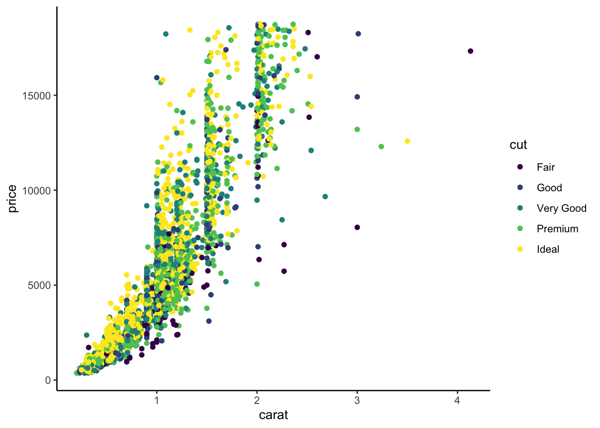
> ggplot(data=diamonds) + geom_boxplot(aes(x=cut,y=carat,fill=cut))
> ggplot(data=diamonds) + geom_boxplot(aes(x=cut,y=carat,fill=cut))+coord_flip()
> ggplot(data=diamonds) + geom_density(aes(x=carat,y=..density..)) + facet_grid(cut~.)- Ajouter sur le troisième graphe les quartiles de la variable carat pour chaque valeur de cut. On utilisera une ligne verticale.
> Q1 <- diamonds %>% group_by(cut) %>%
+ summarize(q1=quantile(carat,c(0.25)),q2=quantile(carat,c(0.5)),
+ q3=quantile(carat,c(0.75)))
> quantildf <- Q1%>% gather(key="alpha",value="quantiles",-cut)
> ggplot(data=diamonds) + geom_density(aes(x=carat,y=..density..))+
+ facet_grid(cut~.) +
+ geom_vline(data=quantildf,aes(xintercept=quantiles),col=alpha("black",1/2))
- En déduire le graphe suivant (on utilisera le package ggstance).